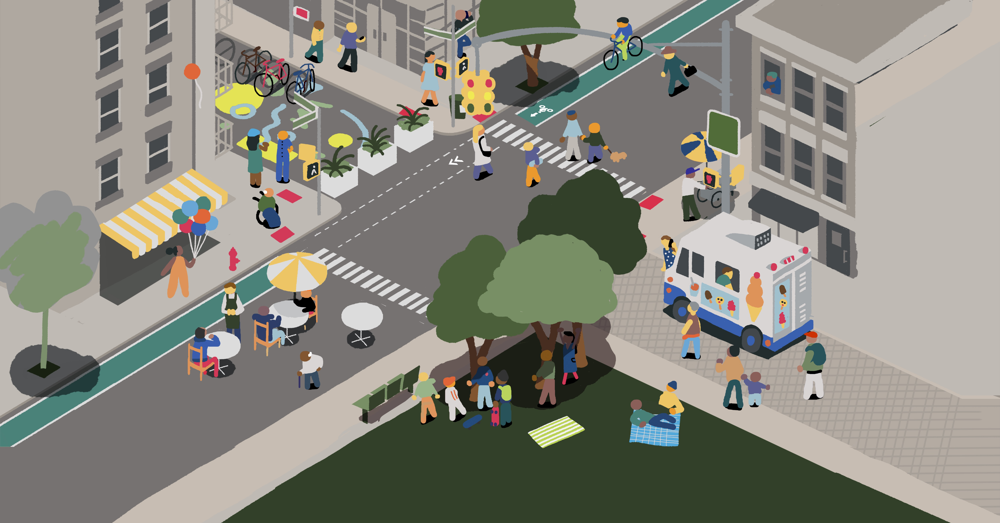

Taken together, streets and sidewalks are New York City’s largest publicly owned space. Cars dominate that space. Despite the spatial abundance of 6,300 miles of asphalt and three million free parking spaces, New Yorkers’ everyday lives are relegated to narrow sidewalks and the margins of streets, where we are left to fight over the precious remaining scraps of our public space.
In the past two decades, elected officials have made little citywide progress in upending this wholesale car dominance — opting for disconnected and piecemeal improvements that fail to effectively manage our streets as a system of public spaces. For New Yorkers, the negative effects of a car-filled city remain. Asthma, heart disease, and preterm births rise with car pollution. Carbon emissions remain high and climate change threatens our future. New Yorkers risk life-altering injury and death crossing the street. Bus riders waste time on gridlocked streets. Burdensome commutes and a lack of transportation choices isolate communities from opportunity.
With a coalition of more than 80 unions, and economic, educational, environmental, disability rights, and public health organizations, Transportation Alternatives challenges New York City’s next leaders to end this vicious cycle by making a specific and substantial promise: to convert 25 percent of car space into space for people by 2025.
Today, New York City faces a budget shortfall, a crisis of racial injustice, rising inequality and traffic violence, the loss of millions of jobs and small businesses, and the ongoing threat of climate change. Our recovery can begin, in part, by reimagining our largest public asset — New York City’s 6,300 miles of streets and three million free parking spaces — in support of the needs of all New Yorkers.
 WXY
Today, New York City faces a budget shortfall, a crisis of racial injustice, rising inequality and traffic violence, the loss of millions of jobs and small businesses, and the ongoing threat of climate change. Our recovery can begin, in part, by reimagining our largest public asset — New York City’s 6,300 miles of streets and three million free parking spaces — in support of the needs of all New Yorkers.